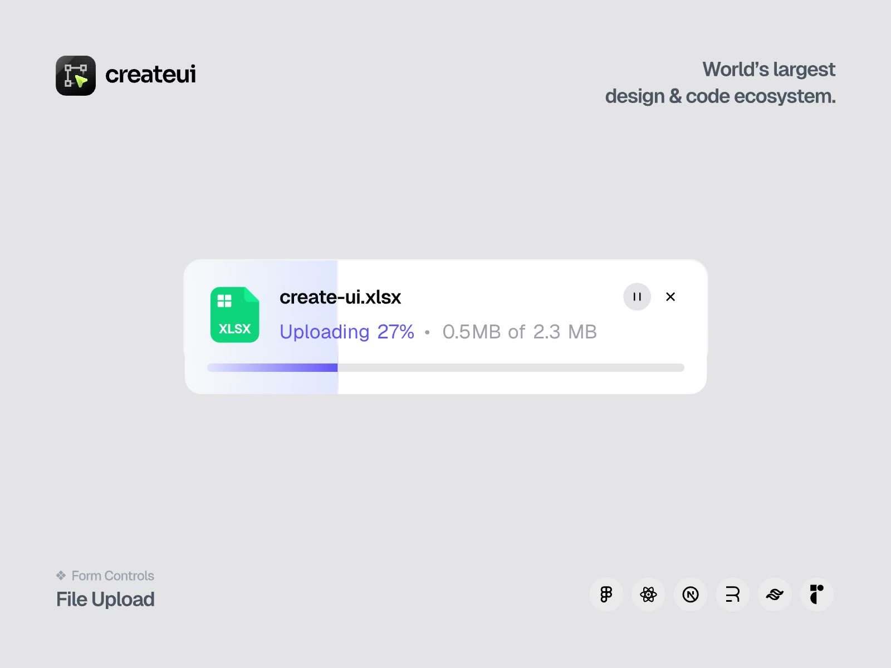
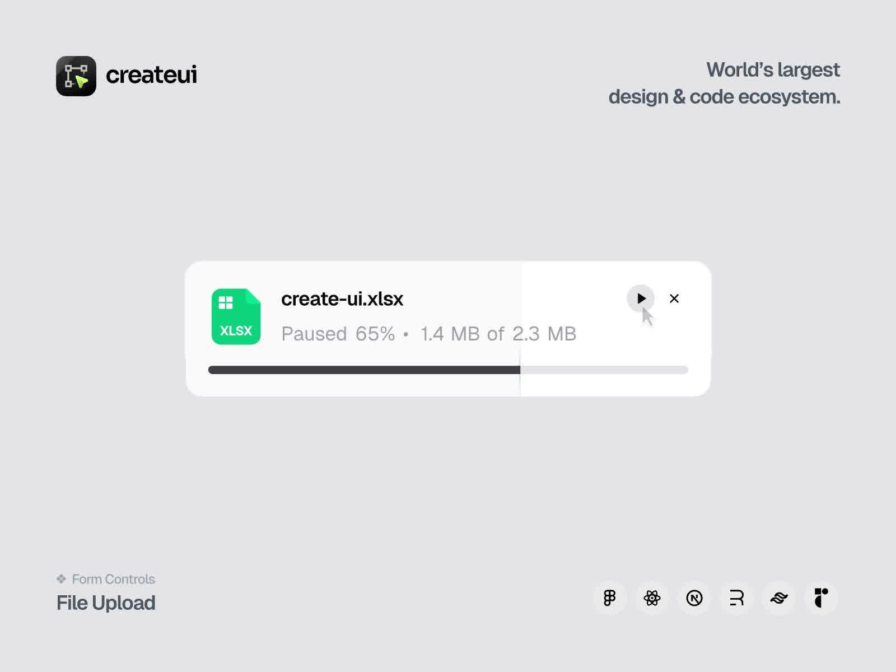
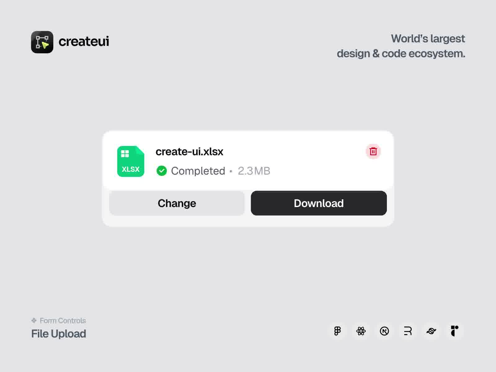

淡紫色从左边灌进文件行。暂停时灌色退去，细条变深。完成后绿勾，底下长出 Change 和 Download。
浅灰底。一张白圆角文件卡停在正中：绿图标、文件名 create-ui.xlsx、紫色 Uploading 27%。淡紫色从左边灌进来，底下一条更饱和的细条跟着同一个百分比。
原帖是 16.1 秒、1600×1200、60fps 的组件演示。本页收文件卡本身：灌满、暂停、完成。Create UI 的商标和六个框架圆点不收。

灌色是卡里一层从左变宽的矩形，圆角跟卡相同，溢出裁掉。0% 仍留 16px，左缘看起来像一粒胶囊。暂停时这一层透明度收到 0，细条改成炭灰。Paused 才站到第一层。
原录像在约 5 秒、65% 处点暂停，停 1.1 秒再继续。0→65% 用 5 秒，65→100% 用 4.5 秒。完成那一帧先出现绿勾，仍写 Uploading，细条收到右边；随后字换成 Completed，暂停和关闭换成垃圾桶，Change / Download 从卡下长出来。
状态写在文件名下面：Uploading 27% · 0.5 MB of 2.3 MB。没有「进度」标签。数字自己说明自己。


| 项目 | 取值 |
|---|---|
| 原件 | 16.1s，1600×1200，60fps，1.25MB。文件 2.3 MB |
| 底 | #e4e4e6。卡白，圆角 24px。托盘圆角 28px，#f2f2f4 |
| 卡宽 | 原帧 943px / 1600。本页 min(680px, 92%) |
| 灌色 | #e6eaff 到 #dcd6ff。0% 最小宽 16px |
| 细条 | 高 5px。上传 #7064f6，暂停 #3a3a40 |
| 状态色 | 上传 #6c5cf6。暂停 / 完成次行 #9b9ba3 |
| 图标 | 52px，#12c87a，四格白块 |
| 时序 | 0→65% 5s，暂停 1.1s，65→100% 4.5s。完成后再 600ms 长出按钮 |
#card#flood 从左变宽。细条 #bar 同一百分比。#pause#actions